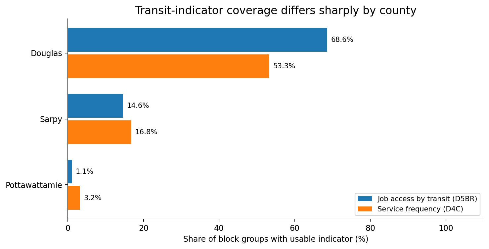
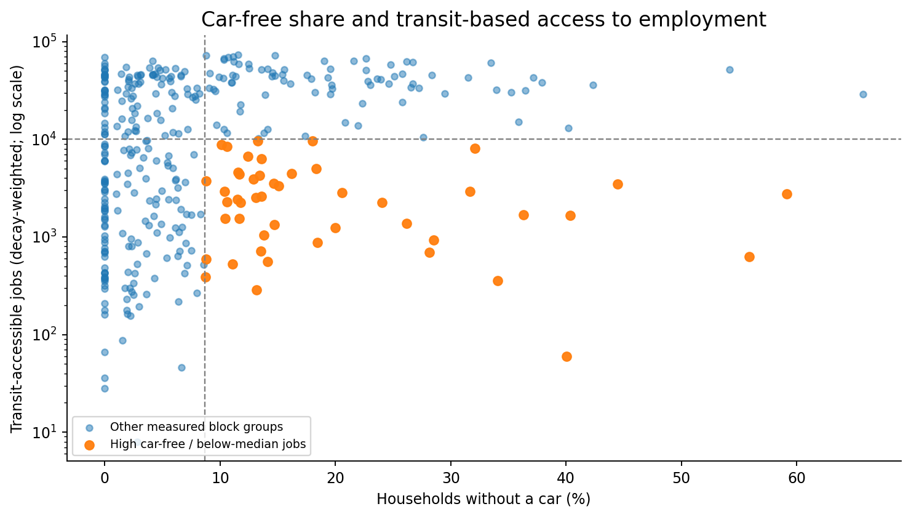
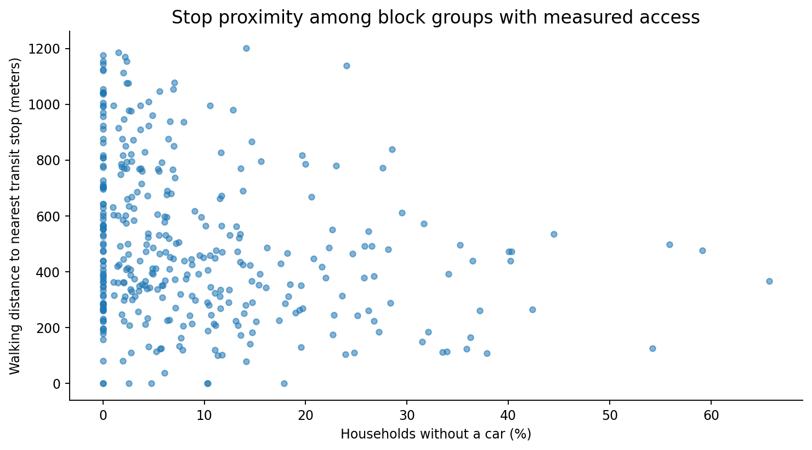
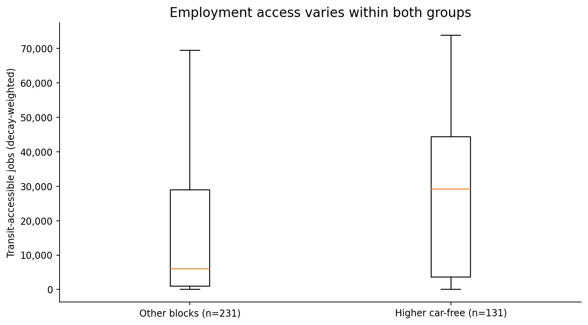
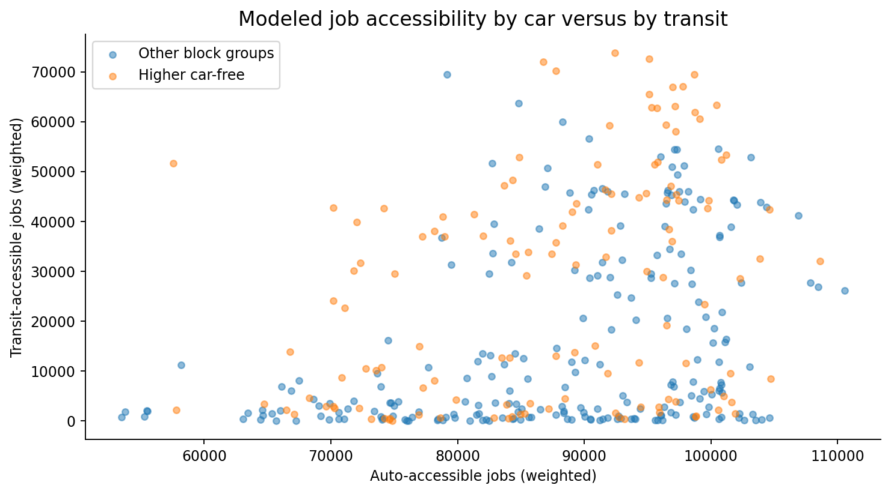

Transit & Employment Accessibility
Omaha–Council Bluffs three-county study region
Research question and main finding
Question: How do households without a vehicle relate to transit service and transit-based access to employment?
Main finding. Among block groups with usable transit indicators, transit service generally appears concentrated in neighborhoods where car-free households are more common. Yet this regional pattern hides 47 higher-car-free block groups with comparatively limited modeled transit access to employment. These locations are candidates for further investigation using current GTFS schedules, ridership and local service data, not confirmed transit deserts.
Methods
Data source, scope and preparation
We analyze the team-filtered EPA Smart Location Database v3 (2021 release): Douglas and Sarpy counties in Nebraska and Pottawattamie County in Iowa. The sample includes areas beyond incorporated Omaha and Council Bluffs. Each row represents a census block group. The source data were filtered by county; the numeric access measures were parsed for analysis.
The original GEOID10 and GEOID20 fields in the uploaded file are truncated/rounded. We reconstructed 12-digit candidate block-group IDs using STATEFP, COUNTYFP, TRACTCE and BLKGRPCE. The reconstructed IDs must be validated against authoritative boundaries before GIS joins or location-specific planning.
Indicator definitions
| Field | Measure | Interpretation |
|---|---|---|
Pct_AO0 | Share of households with zero vehicles | Fraction converted to percentage for display |
D4A | Walking network distance to nearest qualifying transit stop | Lower means a closer stop, for observed records |
D4C | Afternoon peak-period transit-service frequency | Higher means greater reported frequency |
D4D | Transit-service frequency density | Higher means greater reported density |
D5BR | Decay-weighted jobs accessible by transit | Higher modeled access; not a literal count of all reachable jobs |
D5AR | Decay-weighted jobs accessible by auto | Different mode and time assumptions from D5BR |
Missing-value handling and coverage rules
EPA sentinel -99999 values are treated as unavailable, never as zero. Some such codes may reflect distance limits, incomplete GTFS inputs or other noncoverage rules. Each analysis uses only observed values for that particular indicator; denominators therefore differ. Missing transit values are not classified as weak transit service.
Only 362 of 727 block groups have observed D5BR. In Pottawattamie County, just 1 of 93 have a valid D5BR value. Therefore, missing Iowa-side data cannot be used to infer no transit service or to support a direct Omaha–Council Bluffs transit-access comparison.
Correlations, medians and the higher-car-free threshold
We use Spearman rank correlation to summarize monotonic associations between Pct_AO0 and each accessibility measure, using complete pairs for each measure. The 75th percentile of car-free household share across all 727 block groups is 8.68% (182 block groups at or above this cutoff). We compare each indicator’s observed medians for this higher-car-free group versus other block groups. These summaries are descriptive and are not causal estimates.
Relative-gap screening definition
The screen flags a block group only if (1) zero-vehicle household share is at least 8.68% (full-sample upper quartile), and (2) observed transit employment access D5BR falls below 9,975, the median across all measured D5BR values. A block group without D5BR data cannot be screened.
This rule is a dataset-relative heuristic for prioritizing follow-up. It is not an official transit-service or planning standard and does not independently establish inadequate transit service.
Results
Data coverage by county
| County | Block groups | D4A observed | D4C observed | D5BR observed |
|---|---|---|---|---|
| Douglas | 497 | 341 (68.6%) | 265 (53.3%) | 341 (68.6%) |
| Sarpy | 137 | 20 (14.6%) | 23 (16.8%) | 20 (14.6%) |
| Pottawattamie | 93 | 1 (1.1%) | 3 (3.2%) | 1 (1.1%) |
Figure 1. Transit-indicator coverage by county

What it shows. Coverage is extremely uneven. D5BR is available for 362 of 727 block groups, including only 1 of 93 in Pottawattamie County. These bars report data availability, not actual service supply.
Why it matters. Incomplete and geographically imbalanced data can distort area comparisons or falsely suggest that unmeasured neighborhoods have no transit.
How a planner could use it. Seek consistent current GTFS, service coverage and ridership data across both states before interpreting or ranking locations.
Observed associations and descriptive group medians
| Indicator | Observed n | Spearman ρ | Higher-car-free median | Other median |
|---|---|---|---|---|
| D4A — Walking distance to stop | 362 | -0.264 | 379.5 | 505.6 |
| D4C — Peak-period transit service frequency | 291 | +0.334 | 3.0 | 1.3 |
| D4D — Transit frequency density | 291 | +0.372 | 15.4 | 5.3 |
| D5BR — Transit-accessible jobs (decay-weighted) | 362 | +0.257 | 29,142.0 | 6,031.0 |
| D5AR — Auto-accessible jobs (decay-weighted) | 727 | +0.218 | 84,132.0 | 75,210.0 |
Car-free share has a positive association with transit job access (ρ = +0.257, n=362), with frequency (ρ = +0.334, n=291) and a negative association with stop distance (ρ = -0.264, n=362). Negative distance correlation indicates closer stops among observed records. Correlation does not imply causation.
Figure 2. Car-free share and modeled transit access to jobs

What it shows. The overall trend is positive, but the flagged points at higher car-free shares and below-median transit-job access reveal important exceptions. The vertical axis is logarithmic; dashed lines mark screening thresholds.
Why it matters. A favorable regional relationship can obscure smaller groups of neighborhoods that may be underserved relative to others with similar car-free reliance.
How a planner could use it. Start with the flagged observations, then investigate transit connections to employment sites, frequency, transfer burden, and actual trip times.
Figure 3. Car-free share and walk distance to a transit stop

What it shows. Higher car-free shares generally coincide with shorter observed walk distances to qualifying transit stops, although the scatter shows substantial neighborhood variation.
Why it matters. Stop proximity alone does not guarantee frequent, reliable service or practical access to employment.
How a planner could use it. Review pedestrian access, stop accessibility, service frequency and travel-time connections, not just map distance.
Figure 4. Transit job access across car-free household groups

What it shows. The observed higher-car-free group has a median of 29,142 weighted transit-accessible jobs, compared with 6,031 among other observed groups. Both distributions vary. Plot markers for outliers are hidden for readability, not excluded from the medians.
Why it matters. A stronger typical outcome for one group does not rule out meaningful within-group access gaps.
How a planner could use it. Combine distribution patterns with local travel needs and the flagged candidate list rather than planning from group medians alone.
Figure 5. Modeled employment access by transit versus automobile

What it shows. The plot pairs observed transit-job access (D5BR) with auto-job access (D5AR). Transit values are observed for 362 block groups, whereas D5AR is available for all 727. The two indicators use different model assumptions.
Why it matters. Values are not comparable as a literal percent of identical jobs reachable within the same door-to-door travel time.
How a planner could use it. Use this to identify places needing closer analysis; for formal modal comparisons, calculate current door-to-door travel times under aligned assumptions.
Relative gap candidates: the actionable shortlist
47 of 131 higher-car-free block groups with measured transit-job scores (35.9%) meet both screening conditions. They are candidates for investigation, not proven transit deserts. Ten with the lowest observed modeled transit-job scores are listed below; the full list is in results/relative_gap_candidates.csv.
| Reconstructed candidate ID | County | Car-free share | Weighted transit jobs | Walk distance (m) |
|---|---|---|---|---|
310550011001 | Nebraska / Douglas | 40.0% | 60 | 472.1 |
310550065061 | Nebraska / Douglas | 13.2% | 288 | 563.3 |
310550063021 | Nebraska / Douglas | 34.1% | 356 | 392.9 |
310550064002 | Nebraska / Douglas | 8.7% | 389 | 445.2 |
310550012001 | Nebraska / Douglas | 11.1% | 530 | 119.4 |
310550065043 | Nebraska / Douglas | 14.1% | 557 | 1,201.6 |
310550074513 | Nebraska / Douglas | 8.8% | 591 | 426.5 |
310550011002 | Nebraska / Douglas | 55.9% | 627 | 498.9 |
310550065062 | Nebraska / Douglas | 28.1% | 695 | 480.1 |
310550074361 | Nebraska / Douglas | 13.5% | 717 | 435.9 |
Why this matters. The shortlist makes the regional association operational: it directs attention to specific observed areas while recognizing that the screen does not measure official adequacy.
Planner next step. Verify block-group identifiers, refresh GTFS and ridership data, model current job trips, and consult transit users before considering service changes or capital investments.
Discussion, limitations and team integration
Interpretation: Among observed block groups, transit service generally appears concentrated where car-free households are more common. Nonetheless, 47 higher-car-free block groups have comparatively limited modeled transit access to employment. The flag identifies opportunities for follow-up analysis, not confirmed service insufficiency.
- Nonrandom missingness. D5BR is observed for only 362/727 block groups and only 1/93 in Pottawattamie. Missing Iowa values do not imply zero transit service and must not be used for a direct Omaha–Council Bluffs transit comparison.
- Geographic scope. The three-county area extends beyond Omaha and Council Bluffs city limits; reconstructed geographic IDs need validation before mapping.
- Data vintage and modeled outcomes. The 2021 EPA release reflects historical data, not current 2026 routes, ridership or travel times; D5AR and D5BR differ in mode and timing assumptions.
- Noncausal evidence. Differences may reflect income, density, land use and residential selection; correlations are not evidence that transit service caused vehicle-ownership patterns.
- Team integration. Compare flags with Adithya’s neighborhood clusters and Juicio’s vehicle-ownership model. Noah’s cross-area comparison should explicitly state the severe transit-data coverage imbalance.
Sources
- U.S. EPA: Smart Location Mapping
- U.S. EPA: Smart Location Database v3 Technical Documentation (2021)
- Team-filtered
EPA_SDL_OmahaCouncilBluffs.csv, from EPA SLD v3.